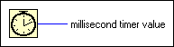

Tick Count (ms) Function
Owning Palette: Timing VIs and Functions
Requires: Base Development System
Returns the value of the millisecond timer.
The base reference time (millisecond zero) is undefined. That is, you cannot convert millisecond timer value to a real-world time or date. Be careful when you use this function in comparisons because the value of the millisecond timer wraps from (2^32)–1 to 0.

 Add to the block diagram Add to the block diagram |
 Find on the palette Find on the palette |